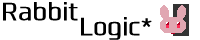

◆Rabbit Logic*とは？
このサイトは幽崎百景が作成した創作物を公開しています。素材も配布したりします。
創作物は主にイラスト、自作ゲーム等です。世界観の設定についても載せています。
ゆるく創作していきますので、お付き合いいただけると幸いです。
◆禁止事項
当サイトのバナーや配布素材を除く創作物を無断で転載するのはご遠慮願います。◆二次創作について
二次創作大歓迎です！
二次創作はイラストをはじめ、漫画や小説、ゲーム、グッズ、コスプレ等様々な表現があると思いますが、禁止事項を守っていただけるならば自由に創作活動等して大丈夫です。
【二次創作における禁止事項】
・作品内のデータをそのまま素材として用いる、もしくは加工して用いる事例)ゲーム内に登場するキャラクターの立ち絵等、このサイトで利用OKの素材として配布していないもの
・素材の二次配布、自作発言を行うこと
・キャラクターを利用した誹謗中傷、名誉棄損等、キャラクターや世界観を損なうような二次創作をする事
・二次創作作品を管理人が制作したように見せかける事(絵柄を似せる等は大丈夫です。)
・その他、当サイトや著作物、管理人に対して不利益を及ぼすような行為
これらを守って楽しく二次創作してくださると大変嬉しいです！
※このガイドラインに関して予告無く改変することがございます。ご了承ください。
◆リンクについて
当サイトはリンクフリーです。リンク報告は任意ですが、リンク報告があれば大変嬉しいです！喜びます。以下はバナー画像です。
白背景
黒背景